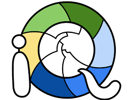
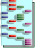
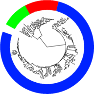
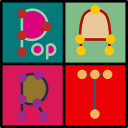

14 Softwares
Em nosso laboratório dependemos bastante do uso de diversos softwares para realizar diferentes análises. Enquanto o início dos trabalhos é feito com aparelhos em nosso laboratório, após receber os resultados do sequenciamento, dependemos de análises realizadas no próprio computador.
Para isso, precisamos entender como as análises funcionam e também qual a melhor forma que realizá-las, evitando dores de cabeça por resultados que não refletem a realidade.
A seguir vamos apresentar os principais softwares utilizados, bem como algumas dicas que podem facilitar o trabalho. Lembre-se, é muito mais fácil aprender com outros alunos do que apenas com os manuais de cada programa. Peça ajuda, principalmente com as análises, que podem gerar resultados errados e atrapalhar toda sua pesquisa.
14.1 BioEdit
Útil para: Edição
BioEdit é um editor de sequências de DNA e proteínas muito utilizado na genética molecular. Ele é especialmente útil na visualização de eletroferogramas, que são gráficos gerados por sequenciadores de DNA que mostram a sequência de base de uma amostra de DNA.
O BioEdit permite a visualização de eletroferogramas de maneira fácil e rápida, além de fornecer uma ampla gama de ferramentas para análise de sequências, como alinhamento de sequências, análise de substituição de nucleotídeos e proteínas, e muito mais. Ele também possui uma interface intuitiva e é compatível com Windows, MacOS e Linux.
Além da visualização de eletroferogramas, o BioEdit é amplamente utilizado em diversas outras tarefas de genética molecular, como edição de sequências, anotação de genes e análise de expressão gênica.
Usos
Prós
Contras
- A última versão disponível é de 2005.
14.2 MEGA
Útil para: Edição / Alinhamento / Modelo / Árvore
O MEGA (Molecular Evolutionary Genetics Analysis) é um software de análise de genética molecular utilizado para estudar a evolução e a relação filogenética entre sequências de DNA, RNA ou proteínas. Ele é amplamente utilizado por pesquisadores em diversas áreas da genética molecular, incluindo biologia evolutiva, genômica e epidemiologia de doenças.
O MEGA possui uma ampla gama de recursos, incluindo alinhamento de sequências, inferência de árvores filogenéticas, análise de substituição de nucleotídeos e proteínas, e muito mais. Ele também permite a visualização e análise de dados de diversas maneiras, como gráficos e tabelas.
Ele um software fácil de usar, com uma interface intuitiva e uma ampla base de usuários e recursos on-line disponíveis. Ele é compatível com Windows, MacOS e Linux e está disponível para download gratuito em seu site oficial.
Atualmente o MEGA está na versão 11, mas contém um ou outro bug que pode atrapalhar bastante. O MEGA 7 possui quase todas as ferramentas que precisamos e é mais estável. Recomendamos usar essa versão para coisas básicas.
Usos
Prós
- É simples e fácil de aprender.
Contras
- Roda no computador e algumas análises (como árvores ML) podem ser bem demoradas.
14.3 IQTree

Útil para: Modelo / Árvore
Usos
Prós
Contras
14.4 jModelTest
Útil para: Modelo
Usos
Prós
- Bastante reconhecido e utilizado em outros trabalhos.
Contras
- É bem demorado.
14.5 RAxML
Útil para: Árvore
Link: https://raxml-ng.vital-it.ch
RAxML (Randomized Axelerated Maximum Likelihood) é um software de análise filogenética utilizado para inferir árvores filogenéticas a partir de sequências de DNA, RNA ou proteínas. Ele é especialmente útil para análises com grandes conjuntos de dados, pois é capaz de processar grandes quantidades de dados de maneira rápida e eficiente.
O RAxML possui vários métodos de inferência de árvores filogenéticas, como o método de máxima verossimilhança (ML) e o método de Bayesiano. Ele também permite a realização de análises bootstrap, que são usadas para avaliar a confiabilidade das árvores filogenéticas inferidas.
Prós
Fácil uso;
Não requer uso de memória do computador, ele roda em servidor.
Contras
- Tem um limite de bootstrap de 100
14.6 PhyML
Útil para: Modelo / Árvore
Link: http://www.atgc-montpellier.fr/phyml/
Phylogenetic Maximum Likelihood (PhyML) é um servidor online para gerar inferências filogenéticas pelo método de máxima verossimilhança. O servidor é intuitivo, portanto, de fácil uso. Para gerar uma árvore filogenética no PhyML, é preciso fornecer um arquivo de alinhamento no formato PHYLIP (é possível exportar alinhamentos neste formato na versão do MEGA 10). Após o término das análises, o PhyML fornece um arquivo zip que contém, além da árvore, outros relatórios estatísticos (como a lista dos modelos evolutivos, por exemplo)
Prós:
Fácil uso;
Permite realizar várias customizações nos parâmetros estatísticos que não são possíveis de personalizar em outros softwares, como o MEGA;
Possui bootstrap de 1000;
Não requer uso de memória do computador, ele roda em servidor.
Contras:
Utiliza o formato PHYLIP, diferente de outros que utilizam FASTA, por isso é possível que o usuário tenha que formatar os terminais da árvore, um trabalho manual desgastante. Recomendamos o uso do pacote nupgen no R para corrigir este problema;
As análises demoram em média 8 horas (podendo variar de acordo com a quantidade de sequências). Por isso, preste atenção antes de rodar as análises.
14.7 DNAsp

Útil para: Haplótipos
A capacidade de análise de milhões de regiões de sequência de DNA em uma só vez é exigida em diversas disciplinas, tais como genômica populacional e ecologia molecular. Para tanto, o DnaSP, derivado do inglês “DNA Sequence Polymorphism” (Polimorfismo de Sequência de DNA) é uma ferramenta bioinformática concebida para a análise abrangente da variação dos dados da sequência de DNA, utilizando uma interface gráfica de utilizador de fácil uso. A versão 6 do software apresenta um PDF disponível para consulta disponibilizado no próprio site e pode ser acessado pelo link: http://www.ub.edu/dnasp/DnaSP6_Documentation_6.12.pdf.
O programa permite a caracterização detalhada dos níveis e padrões de variação da sequência de DNA em diferentes escalas de tempo, utilizando variantes polimórficas (dados intra-específicos), dados de divergência (dados interespecíficos ou interpopulação), ou uma combinação de ambos. É possível calcular diversidade haplotípica, nucleotídica, bem como a quantidade distintas de haplótipos (quando analisadas duas ou mais sequências de DNA).
14.8 Delimitadores de espécies
Útil para: Delim. Espécies
Análises de delimitação de espécies são utilizadas para determinar os limites entre espécies e definir a diversidade de espécies em um determinado grupo. Elas são muito importantes em biologia evolutiva e conservação de espécies, pois permitem o entendimento da distribuição de espécies e como elas se relacionam entre si.
Existem várias abordagens para realizar análises de delimitação de espécies, como análises de distância genética, análises de diferenças genéticas e análises filogenéticas. Cada método tem suas próprias vantagens e desvantagens, e o método ideal dependerá da aplicação específica. Além disso, é importante lembrar que a delimitação de espécies é um campo em constante evolução e novas abordagens são desenvolvidas constantemente.
Como estes são métodos complementares, serão apresentados em conjunto.
PTP
Link: https://species.h-its.org/ptp/
texto
O arquivo gerado pode ser convertido em tabela utilizando o pacote nupgen.
ABGD
Link: https://bioinfo.mnhn.fr/abi/public/abgd/abgdweb.html
Artigo: https://onlinelibrary.wiley.com/doi/10.1111/j.1365-294X.2011.05239.x
texto
“The ASAP analysis uses pairwise genetic distance to automatically find the barcode gap to divide the dataset into a list of several partitions ranked by a score. This new algorithm overcomes the limitations of its predecessor, ABGD (Puillandre et al., 2012), by selecting the best partition using the ‘ASAP score’ calculated by the probabilities of groups to be panmictic species and the barcode gap widths.” (Mendoza-Ramírez et al., 2022)
ASAP
Link: https://bioinfo.mnhn.fr/abi/public/asap/
Artigo: https://onlinelibrary.wiley.com/doi/10.1111/1755-0998.13281
texto
GMYC
Link: https://species.h-its.org/gmyc/
texto
Os resultados são gerados utilizando um servidor que apenas roda um código em R na nuvem. Como o site não permite mais baixar os resultados em forma de tabela, fizemos um aplicativo em Shiny para uso interno que permite isso: https://brunomioto.shinyapps.io/shiny_gmyc/
14.9 FigTree
Útil para: Árvore - Edição
FigTree é um software de visualização de árvores filogenéticas utilizado para exibir árvores inferidas a partir de sequências de DNA, RNA ou proteínas. Ele é compatível com Windows, MacOS e Linux e permite a visualização de árvores filogenéticas de maneira clara e intuitiva, tornando mais fácil a interpretação dos resultados.
O FigTree possui uma ampla gama de recursos de visualização, como opções de estilo de linha, rótulos de nós, legendas e muito mais. Ele também permite a exportação de árvores para vários formatos, incluindo imagens, PDF e arquivos Newick. Além disso, o FigTree possui uma interface intuitiva e é fácil de usar, mesmo para usuários sem experiência prévia em análises filogenéticas.
Prós
Contras
14.10 iTOL

Útil para: Árvore - Edição
Link: https://itol.embl.de/
Prós
Contras
14.11 PopArt

Útil para: Haplótipos / Árvore - Edição